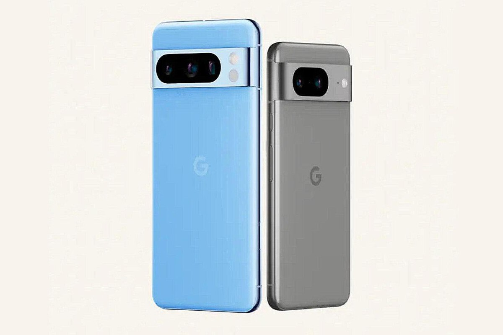

En el segmento de la fotografía móvil los sensores son importantes, pero lo es cada vez más la fotografía computacional y el uso de sistemas de inteligencia artificial. De eso saben un poco en Google, pero ahora una nueva filtración ha revelado que veremos aún más novedades en la inminente presentación de los Pixel 8 y Pixel 8 Pro. Algunas de ellas, eso sí, discutibles.`
 Mas información sobre IA